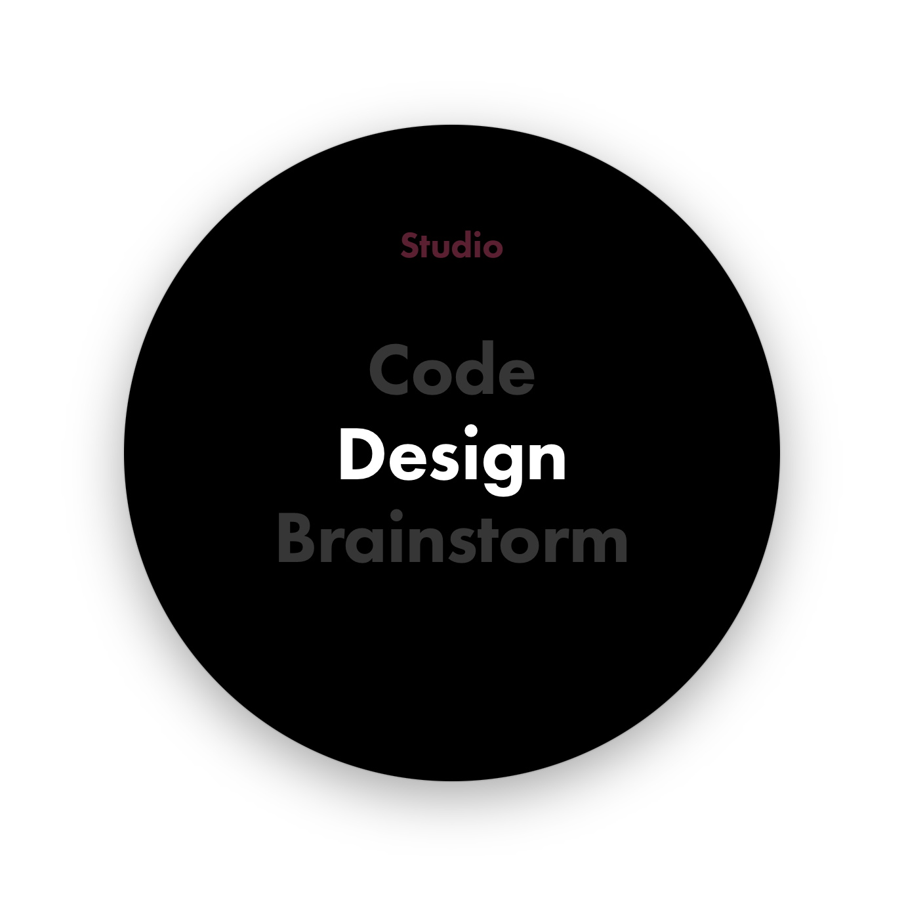

Modes
V.0.8
This is my favorite tool to date. Modes are saved window layouts under a Project. This spotlight tool pops up on ctrl+space, and allows changing Projects and Modes with a few quick keystrokes. Tab to edit.
This simple geometric design is more of the style I'd like to do for this project. Most everything is tidy and wireframe-y. I hope to push things out of the beige zone in short order.